Um dos maiores problemas no oceano
Todos os anos, milhões de toneladas de resíduos são
despejadas nos oceanos , ameaçando a vida marinha
e os ecossistemas
costeiros.



O Plástico
Estudos indicam que, se mantido o ritmo atual, em
20 anos a produção de plástico poderá atingir cerca de 800 milhões de
toneladas por ano.